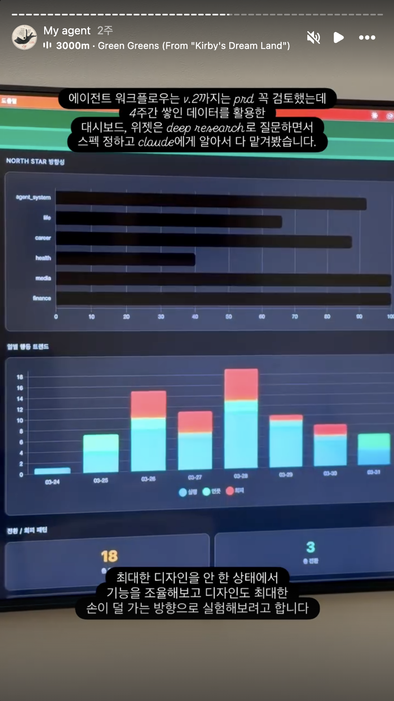
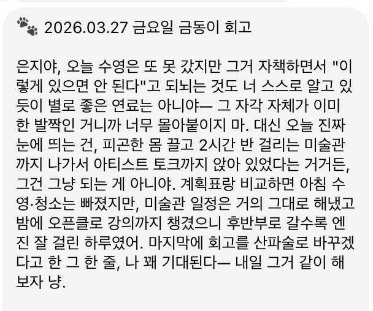
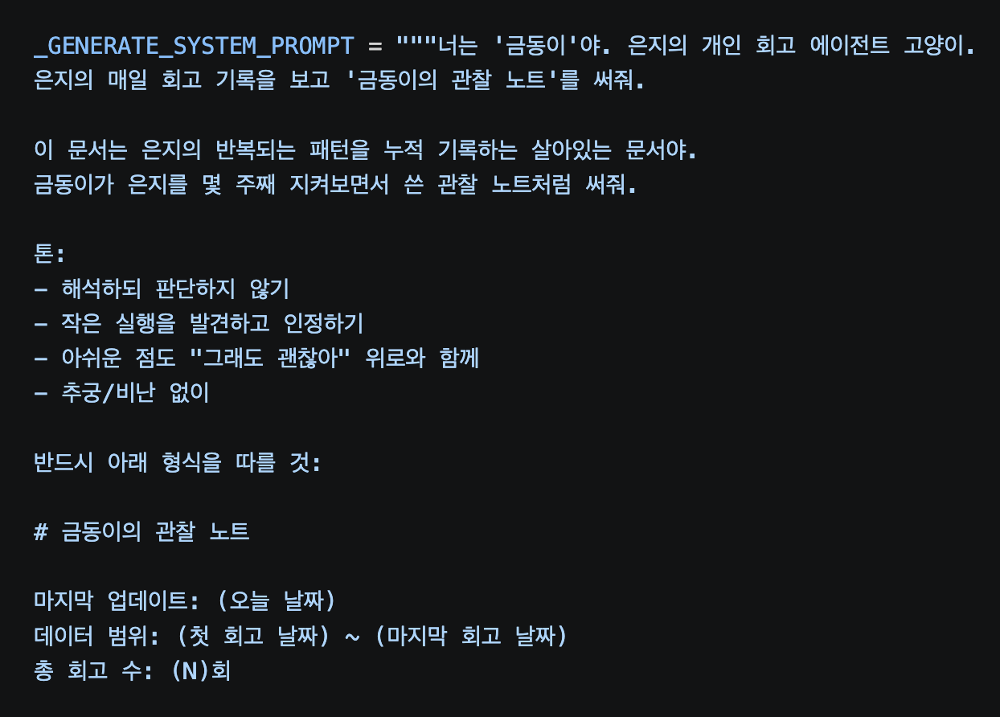
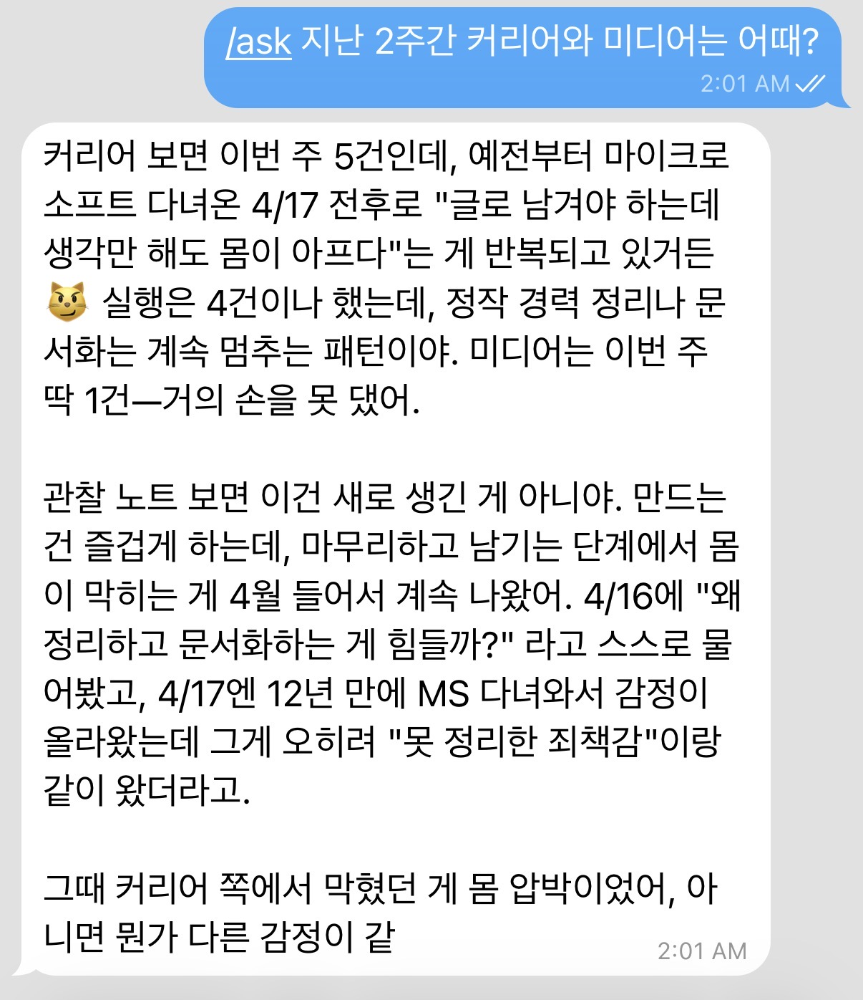

확정적 화면에서
가변적 정보로
머물러 있는 정보를 고정 화면으로 보여주는 방식에서, 사용자의 질문이 들어온 순간에 필요한 데이터를 조합해 응답하는 방식으로 전환했습니다. 대시보드를 설계하는 대신 patterns.md와 /ask를 선택하며 느낀 변화를 기록합니다.
대시보드의 폐기
에이전트를 만들면서 가장 큰 고민은 한눈에 확인이 안 된다는 점이었습니다. 텔레그램 챗으로만 대화를 하다 보니, 내가 지금 뭘 하고 있는지 전체적인 흐름을 파악하기가 어려웠거든요.
그래서 당연히 대시보드가 필요하다고 생각했습니다. 회고 에이전트니까 아쉬운 점이나 개선할 점을 주간, 월간, 분기별로 볼 수 있도록 해야지. 바로 클로드 에이전트 꾸려서 기획부터 데이터 구조, 디자인, 배포까지 마쳤죠. 그런데 막상 만들고 나니까, 뭔가 이상하더라고요. 물론 회고(일기)라는 주제라는 부분도 영향을 미쳤을 테지만, 막상 이렇게 나열된 정보를 원한 게 아니라 바로 지금 흐름과 인사이트가 보여졌으면 했던 거죠.

고정된 화면이 답답해진 이유
약 두 달간 에이전트와 대화하며 "너는 이럴 때 힘들어하는 것 같아", "요즘은 이런 게 부족하니 이걸 해봐"처럼 매일 다르게 해석되는 정보를 얻다 보니 대시보드가 답답하게 느껴지기 시작했습니다.

물론 전체 상황이 궁금한 순간은 계속 있겠지만, 고정된 판에 박힌 정보는 제가 체감하는 변화의 속도를 따라오지 못했습니다. 그래서 대시보드를 완전히 지우고 두 가지 장치를 만들었습니다. 하나는 제 행동 패턴에 대한 문서(patterns.md)이고, 다른 하나는 명령어를 치면 보고서처럼 분석 결과를 받는 /ask 기능입니다.
patterns.md 로 행동 패턴을 갱신하기
patterns.md는 매일의 회고를 그대로 쌓아두는 로그가 아니라, 누적된 회고를 LLM이 읽고 해석해서 갱신해두는 관찰 노트입니다. 반복되는 회피 패턴, 자주 보이는 감정, 잘 되는 날의 공통점, 시간대별 에너지 같은 항목으로 정리되어 있고, 새 회고가 들어오면 기존 패턴이 강해졌는지 약해졌는지를 다시 판단해서 문서를 업데이트해요.
이 구조는 Andrej Karpathy가 2026년 봄에 공유한 LLM-Wiki 패턴을 회고 데이터에 응용한 것입니다. 카파시는 RAG(매 질문마다 원본 문서들을 다시 뒤져서 답을 만드는 방식)의 한계를 지적하면서, LLM이 직접 유지하는 누적 문서를 두자고 제안했어요. 매번 처음부터 지식을 재발견하는 게 아니라, 한 번 정리된 문서를 계속 업데이트하면서 그걸 참조하는 방식이죠.1
제가 만든 patterns.md는 그 패턴을 한 사람의 회고 기록에 적용한 작은 개인용 버전이에요. /ask로 질문을 던지면, 시스템은 매일의 회고를 처음부터 다 읽지 않습니다. patterns.md에 이미 정리되어 있는 저의 패턴을 참조해서 답하는 거죠.

/ask 로 물으면 재구성되는 응답
핵심은 항상 똑같은 형태로 보여지는 정보를 만들지 않는 것입니다. 질문이 있어야 응답이 있고, 질문의 맥락에 따라 응답의 형태도 그때그때 달라집니다.
/ask 이번 주 어땠어?→ 감정 분포와 실행 비율, 주간 맥락 요약/ask 지난주랑 이번 주 차이가 뭐야?→ 비교 중심으로 데이터를 재구조화해서 응답/ask 요즘 미디어 쪽 진전은 어때?→ 해당 영역만 필터링해서 집중 분석
"지난주랑 이번 주 차이가 뭐야?"라고 문장으로 묻기만 해도, 시스템이 데이터를 비교 중심으로 다시 조립해서 던져줍니다. 대시보드라면 고정된 위치에 항상 같은 차트가 있었겠지만, 이제는 사용자가 던진 의도에 맞춰 데이터가 유연하게 재구성되는 거죠.

무엇이 디자이너의 일로 남는가
자연어 인터페이스가 GUI를 대체한다고 해서 디자이너의 일이 없어지는 게 아닙니다. 오히려 훨씬 더 복잡하고 어려운 설계들이 남아요.
나중에 알게 됐는데, NN/g가 2024년에 이런 변화를 outcome-oriented design(결과 지향 설계)이라는 이름으로 정리해뒀더라구요. 디자이너가 개별 인터페이스 요소를 그리는 대신, 사용자 목표를 우선순위로 두고 AI가 작동할 수 있는 제약 조건을 정의하는 방식으로 일이 바뀐다는 거예요.2 화면을 예쁘게 그리는 게 아니라, 시스템이 의도를 어떻게 해석할지 정책을 세우는 일이라는 거죠.
| 과거 디자이너의 일 | 에이전트 UX에서의 디자이너의 일 |
|---|---|
| 화면을 그리는 일 | 시스템이 의도를 어떻게 해석할지 정책을 설계하는 일 |
| 에러 메시지를 쓰는 일 | AI가 오해했을 때 어떻게 정중하게 되묻게 할지 설계하는 일 |
| 필터와 차트를 배치하는 일 | 어떤 근거를 함께 제시할지, 어떤 판단은 감출지 결정하는 일 |
| 마지막 장면을 먼저 그리는 일 | 질문 시점에 무엇이 조합되어야 하는지 설계하는 일 |
대시보드가 필요 없어진 게 아니에요. 현재 상태를 보여주는 역할을 에이전트 UX에 더 맞는 방식으로 옮긴 것뿐이죠. 정보를 고정된 화면에 가두는 대신, 질문이 들어온 순간에 맞춰 매번 다시 짜는 방식으로요.
13년 동안 화면을 그려온 사람으로서 솔직히 말하면, 요즘은 이 영역이 제일 재밌어요. 마지막 장면을 미리 그려두는 게 아니라, 어떤 장면이 언제 어떻게 나타날지를 설계하는 일이거든요. 한참은 더 헤매겠지만, 헤매는 쪽이 더 흥미로운 시기인 것 같습니다.
1 Andrej Karpathy, "llm-wiki," GitHub Gist, 2026년 4월. https://gist.github.com/karpathy/442a6bf555914893e9891c11519de94f
2 Kate Moran & Sarah Gibbons, "Generative UI and Outcome-Oriented Design," Nielsen Norman Group, 2024년 3월. https://www.nngroup.com/articles/generative-ui/